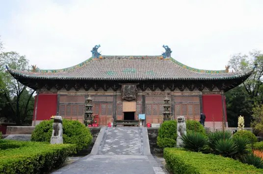

永乐宫 |
返回主页 |  | |
| 永乐宫，原名大纯阳万寿宫， 位于山西芮城县城北约三公里处的龙泉村东， 其占地面积248000平方米。 永乐宫是为纪念吕洞宾而修建的一座道教宫观，其绘制于殿内1000平米的元代壁画是世界现存的古代壁画艺术宝库之一， 国家首批全国重点文物保护单位。 永乐宫始建于公元1247年，原建在芮城县西南20公里的永乐镇，吕祖的出生地。50年代末国家修建三门峡水库，永乐宫被规划在淹没区内，经批示，由国家水利部拨款220余万，从1959年至1965年，将永乐宫原物原貌搬迁至县城城北2公里的西周古魏国都遗址保存。 2023年12月，山西省永乐宫壁画保护研究院与运城学院联合成立的永乐宫文物保护研究中心揭牌。 永乐宫保存了四座巧夺天工的元代木结构建筑，殿内存有1000平米的元代壁画，分布在龙虎殿、三清殿、纯阳殿、重阳殿中。 永乐宫是中国现存最大、保存最为完整的道教宫观，为全真道教三大祖庭之一。 1961年3月4日公布为首批全国重点文物保护单位，1998年10月28日列入世界文化遗产预备名录，2004年评定为4A景区，2011年评为山西省十大最美文物景观。 |
|||